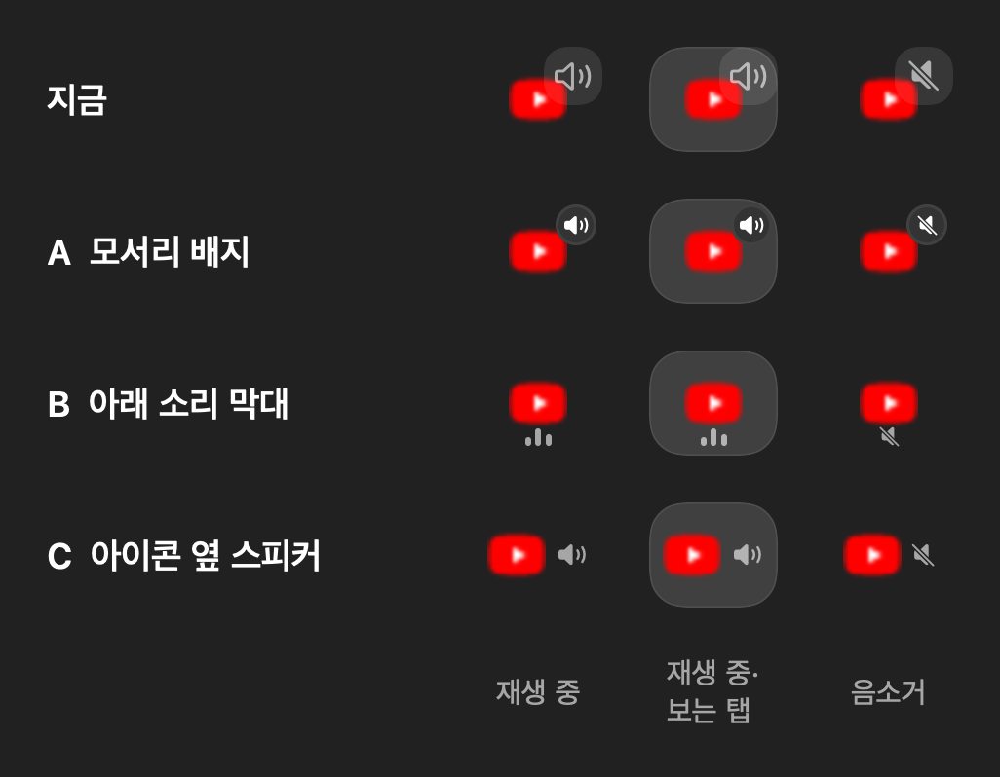
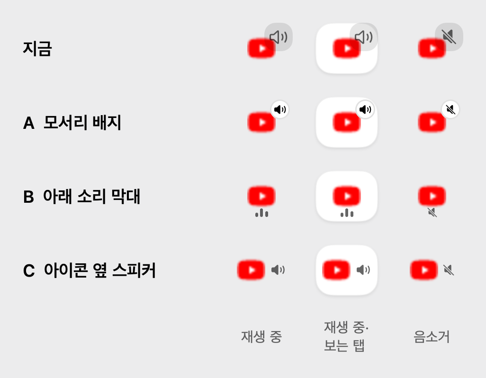

즐겨찾기 타일의 소리 표시 시안이에요. 칸은 왼쪽부터 재생 중, 재생 중이면서 보고 있는 탭, 음소거예요. (아이콘이 흐린 건 저장된 작은 파비콘을 크게 키워서예요.)
- 지금: 20pt 회색 버튼이 아이콘 오른쪽 위를 가려요.
- A 모서리 배지: 타일 모서리의 작은 동그라미. 눌러서 음소거.
- B 아래 소리 막대: 아이콘 밑의 막대 세 개가 소리에 맞춰 움직여요. 음소거면 스피커.
- C 아이콘 옆 스피커: 아이콘을 왼쪽으로 조금 밀고 옆에 스피커.

